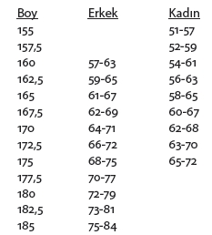
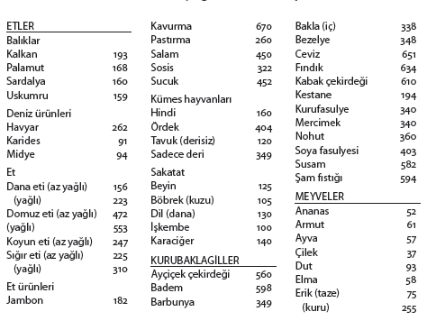

Beslenme
Sağlıklılık ve normallik, üretkenliğin ve ilişkilerin anlamlı olmasıdır. Bunun önemli gereklerinden biri de normal bir beden ağırlığıdır.
Yapılan araştırmalar erken ölümlere sebep olan en büyük dört risk faktörünü ortaya çıkarmıştır. Şişmanlık, yüksek tansiyon, diyabet ve sigara. Birçok kişinin de bildiği gibi, yüksek tansiyon ve diyabet büyük çoğunlukla şişmanlığa eşlik eden sağlık problemleridir. Ayrıca bu dört risk faktörünün birbirleriyle “geometrik” bir ilişkisi olduğu ortaya konmuştur.
Bu ne demektir? Bu faktörlerden 4 tanesine sahip bir insanın riski, hiçbirine sahip olmayana kıyasla 4 kere daha fazla değil, 16 kere daha fazladır.
Şişmanlık ruh sağlığı açısından “ölümcül” olmasa da önemli bir risk faktörüdür. Çünkü bilinmektedir ki, şişman insanların azımsanmayacak bir bölümü kendilerine saygıları az olan, güvensiz ve alıngan insanlardır.
Ayar Mekanizması (Set Point)
Bazı insanların akıl erdiremedikleri bir konu vardır. Nasıl kilo aldıkları! “Su içsem yarıyor”, “O kadar dikkat ediyorum kardeşim, ama bünyem müsait” gibi sözler herkesin kulağına defalarca çalınmıştır.
İnsanların büyük bölümü belirli bir beden ağırlığına ulaştıktan sonra, küçük dalgalanmalar bir yana bırakılırsa, uzun süre bu ağırlık çevresinde hayatlarını sürdürürler. Bu durum büyük bir ihtimalle, insanın beden ağırlığını düzenleyen bir “ayar mekanizması”ndan (set point) kaynaklanmaktadır. Hipotalamusta bulunan ve her insan için ayrı programlanmış olan ayar mekanizması kalıtımsaldır.
Çok yakın zamanda yapılan araştırmalar, insanların kuvvetli diyet programlarından sonra neden hızla eski kilolarına döndükleri konusunda “ayar mekanizmasını” sorumlu tutmaktadır.
Bazı bilim adamları ayar mekanizmasının mutlak olarak kalıtımsal olduğunu ve değiştirilemeyeceğini; bazıları ise iki yöndeki gayretle değiştirilebileceğini savunmaktadırlar.
Ayar mekanizmasının değiştirilebileceğini söyleyenler, diyet programlarına mutlak bir fizik egzersiz programının eşlik etmesi gerektiğini söylemektedirler. Çünkü fizik egzersiz bazal metabolizmayı değiştirmektedir.
İkincisi kaybedilen kiloyu koruyarak ayar mekanizmasını değiştirmek ancak davranış düzenleme tekniklerinin uygulanmasıyla mümkündür.
Daha ilerdeki sayfalarda bir haftada 450 gr.’lık bir ağırlıktan kurtulmak için günde kaç kalorilik bir diyet uygulanması gerektiği açık ve basit bir dille anlatılmıştır. Zayıflama konusundaki temel kavramlardan biri –belki birincisi– bu basit hesabın arkasında yatmaktadır. Çünkü kısa zamanda çok kilo vermeye yönelik hızlı zayıflama programları hem kilo verirken, hem de verilen kiloları en kısa zamanda geri alırken, “kaybedilmiş beden ve ruh sağlığı” demektir.
Kısa zamanda çok kilo kaybetmeye yönelik hızlı zayıflama programlarında rastlanan beden sağlığı problemlerine biraz sonra kısaca değinilecektir. Ancak ruh sağlığı açısından bu programların kaçınılmaz sonucu, kilo verirken de, verdiği kiloları alırken de kişinin girdiği depresyondur.
Depresyonun en genel sebebi kayıptır. Kişi sevdiği faaliyetten –yemekten– uzak olduğu için depresyona girer, bir süre sonra onca eziyetle verdiği kiloları tekrar ve kaçınılmaz olarak geri alırken de, kaybettiği beden ölçüleri ve kendine saygısı için depresyona girer.
Bu sebeple sağlıklı bir biçimde kilo vermek için yapılacak olan; dengeli bir diyet uygulamak, beslenme ve “yeme” alışkanlığını değiştirecek bir davranış düzenlemesi içine girmektir.
Dünyanın en önde gelen tıp dergilerinden Lancet’de zayıflama konusunda üç yöntemin karşılaştırıldığı bir araştırma yayınlanmıştır. Benzer özellikler gösteren hastalar üç grupta toplanmışlar, birinci gruba zayıflama hapı verilmiş; ikinci gruba hap ve yeme alışkanlığını değiştirmeye yönelik davranış düzenlemesi uygulanmış; üçüncü guruba ise sadece davranış düzenleme tekniği uygulanmış.
Dört aylık incelemeden sonra, ilaç grubunun 15 kg, ilaç ve davranış düzenleme grubunun 30 kg, sadece davranış düzenlemesi uygulanan grubun ise 10 kg vermiş olduğu görülmüştür.
Bir yıl sonra yapılan izleme çalışmasında 15 kg veren ilaç grubunun 10 kg geri aldığı ve sadece verdiği 5 kg’ı koruduğu, ilaç ve davranış düzenlemesi grubunun verdiği 30 kg.’dan 24’ünü geri alarak 6 kg.’ı koruduğu, 4 ay içinde 10 kg vermiş olan davranış düzenlemesi grubunun ise sadece yarım kilo almış oldukları ortaya çıkmıştır.
Bu araştırmanın ortaya koyduğu en somut bulgu, dışardan yapılan müdahalenin sadece bu müdahalenin yapıldığı süre için geçerli olduğudur. Görüldüğü gibi, müdahale ortadan kalkınca kişiler hızla eski alışkanlıklarına geri dönmektedirler.
Bu konudaki karışıklıkların bir bölümü, her birey için “ideal diyet” tanımının yeterince bilinmemesinden kaynaklanır. İnsanların farklılığı ve beslenme ihtiyaçları yaşa, cinsiyete, beden ölçülerine, fizik aktivitelerine, hastalık ve hamilelik gibi şartlara bağlı olarak değişiklik gösterir. Günümüzde bilim adamları bireylerin beslenme ihtiyaçları ile diyet, kalp hastalığı ve kanser gibi kronik hastalıklar arasındaki ilişkiler konusunda çok daha hassas bilgileri araştırmaktadırlar.
Aşağıdaki öneriler pek çok kişi tarafından yerine getirilmektedir. Bu program, herhangi bir teşhisin gerektirdiği özel bir diyete ihtiyaç göstermeyen kimseler içindir. Bu program, herhangi bir hastalığı olmayan kimseler için düzenlenmiştir. Bir noktayı hatırlatmakta yarar var, hiçbir kılavuz sağlıklı olmayı mutlak olarak garanti edemez, çünkü sağlığın kendisi pek çok faktöre bağlıdır. Bu faktörlere diyeti de ekleyebilirsiniz. Yiyecek tek başına bir kimseyi sağlıklı kılamaz, ancak iyi yemek alışkanlığı düzenli egzersiz, programlı gevşeme ve olumlu tavırlarla birleşirse sağlığı geliştirebilir.
Ÿ Çeşitli yiyecekler yiyin
Ÿ İdeal kilonuzu koruyun
Ÿ Çok yağdan ve kolesterolden kaçının
Ÿ Karbonhidrattan korkmayın
Ÿ Fazla şekerden uzak durun
Ÿ Fazla sodyumdan kaçının
Ÿ İçki içecekseniz, makul ölçüde kalın
Çeşitli yiyecekler yiyin
Sağlıklı kalabilmek için yaklaşık 40 çeşit besine ihtiyaç vardır. Bunlar arasında vitaminler ve mineraller, proteinlerden alınan amino asitler, karbonhidrat, protein ve yağlardan alınan kaloriler, yani enerji kaynakları sayılabilir. Bu besinler normal olarak yediğiniz yemeklerin içinde mevcuttur.
Pek çok yemekte, birden çok besin vardır. Örneğin süt; başka besinlerin yanı sıra protein, yağ, şeker ve diğer B vitaminleri, vitamin A, kalsiyum ve fosfor içerir.
Hiçbir yiyecek tek başına sizin ihtiyacınız olan miktarda temel besini içermez. Örneğin süt, çok az demir veya C vitamini içerir. Bu sebeple sağlıklı bir beslenme içinde olabilmek için çeşitli besinler almak gerekir.
Ne kadar çok çeşitli yerseniz, belirli bir besinin eksikliği veya fazlalığının yol açacağı sakıncalardan o kadar uzak olursunuz.
Meyve ve sebzeler mükemmel bir vitamin kaynağıdır, özellikle C ve A vitaminleri açısından. Buğday ve diğer tahıllar B vitamini içerirler. Et ise, yağ ve protein olduğu kadar, demir de dahil olmak üzere diğer mineralleri ve thiamine ve B12’yi de içeren birçok vitamini barındırır. Süt ürünleri temel kalsiyum kaynağı olup, pek çok diğer besini de içerirler.
Yeterli Bir Beslenme İçinde Olmak İçin Aşağıda
Sayılanlardan Seçilmiş Çeşitli Yiyecekler Yiyin
MEYVELER
DÜŞÜK YAĞLI SÜT, PEYNİR VE YOĞURT
SEBZELER
ET, BALIK, YUMURTA, TAVUK
TAHILLAR
BAKLAGİLLER (BEZELYE, FASULYE)
Herhangi bir besini fazla ölçüde almanın bilinen hiçbir yararı yoktur. Eğer çeşitli gıdalarla beslenirseniz, çok ender olarak herhangi bir vitamin veya mineral desteğine ihtiyacınız olacaktır. Bu genel yargının az sayıda önemli istisnaları vardır.
– Üretken yıllarında kadınlar, âdet kanamaları ile kaybettikleri demiri almak için, desteğe gerek duyabilirler.
– Hamile olan veya süt veren kadınların pek çok yönde desteğe ihtiyacı vardır. Özellikle demir, folic asit, A vitamini, kalsiyum ve enerji verecek besinler (karbonhidrat, protein ve yağ gibi). Bu konuda ayrıntılı bilgi ilgili hekimlerden alınmalıdır.
– Yaşlıca veya çok az hareket eden kimseler nispeten az yerler. Bu sebeple bunların kalorisi yüksek ancak beslenme değeri az olan yiyeceklerden uzak durmaya dikkat etmeleri gerekir (yağ, alkol, şeker gibi).
İdeal kilonuzu koruyun
Eğer kilonuz normalin üzerindeyse, bazı kronik hastalıkları geliştirme ihtimaliniz artmaktadır. Şişmanlık, yüksek tansiyonla, kanda yağ düzeyinin (tripliseridler) ve kolesterolün artmasıyla ve en çok da şeker hastalığı ile ilgilidir. Diğer taraftan bütün bu sayılanlar da, kalp krizi ve inme konusundaki riski artırmaktadır. İşte bütün bu sebeplerden ötürü “ideal” kiloyu korumak “hayati” önem taşımaktadır.
Ancak sizin için ideal kilonun ne olduğu nasıl belirlenecektir?
Bu sorunun kesin cevabı yoktur. Aşağıdaki tabloda yetişkinler için genellikle “kabul edilebilir” sınırlar verilmeye çalışılmıştır. Eğer çocukluğunuzdan beri şişman sayılan bir kişiyseniz, kendi ideal ağırlığınızı bu sınırlar içinde bulmakta ve sürdürmekte güçlük çekeceksiniz. Pek çok kişi, kilosunun 20 veya 25 yaşlarında olduğu ile aynı düzeyde olması gerektiğine inanır.
Bazı insanların neden çok yedikleri halde normal kilolarını koruyabildikleri tam olarak anlaşılmış değildir. Bununla beraber kesin olan bir şey vardır ki, bu da kilo vermek için yakılandan daha az kalori alınması gerektiğidir. Bunun anlamı açıktır, ya daha az kalorili yiyecekler seçeceksiniz veya aktivitenizi artıracaksınız. Belki de en iyisi ikisini birden yapmanız olacaktır.

Not: Boy ayakkabısız olarak, ağırlık günlük elbiselerle ölçülmeli.
Yemek Alışkanlığınızı Değiştirmek İçin:
Ÿ YAVAŞ YİYİN
Ÿ KÜÇÜK PORSİYONLAR HAZIRLAYIN
Ÿ KÜÇÜK LOKMALARLA YİYİN
Ÿ HER LOKMAYI İYİCE ÇİĞNEYİN
Eğer kilo vermek istiyorsanız bunu yavaş yavaş yapın. Amaçladığınız kiloya ulaşıncaya kadar düzenli olarak haftada 400-900 gr. vermek sağlıklı olduğu kadar, ulaşılan kilonun korunması açısından da yerinde bir yöntemdir. Uzun süreli bir başarı, daha sağlıklı yeme ve egzersiz alışkanlıklarının edinilmesine bağlıdır.
Kısa dönemde çok başarılı olan bazı diyet formüllerinin uzun dönemde başarısız olmalarının muhtemelen en önemli sebebi de budur.
Hızlı bir biçimde kilo vermeye teşebbüs etmeyin. Hızlı kilo verdirmeyi amaçlayan diyet yöntemleri yiyecek çeşitlerini önemli ölçüde sınırlamaktadır. Günlük 800’ün altında kalori alımına yönelik programlar tehlikeli olabilir. Bu tür diyet programları sonucu böbrek taşı, psikolojik sorunlar veya başka bir problemle karşılaşılması ender rastlanan bir durum değildir.
Kilo Kaybetmek İçin:
Ÿ BEDENSEL FAALİYETİNİZİ ARTIRIN
Ÿ DAHA AZ YAĞ VE YAĞLI YİYECEKLER YİYİN
Ÿ DAHA AZ ŞEKER VE TATLI YİYİN
Ÿ ÇOK FAZLA ALKOL ALMAYIN
Ÿ AÇ KALARAK ZAYIFLAMAYA ÇALIŞMAYIN
Günlük bedensel faaliyetin yürüyüşlerle yavaş yavaş artırılması çok yararlıdır. Aşağıdaki listede çeşitli aktiviteler sırasında yakılan kalori miktarları görülmektedir.[19]
|
Faaliyet |
1 saatte yakılan kalori |
||
|
Yatmak veya uyumak |
80 |
Yürümek (6 km.) |
300 |
|
Oturmak |
100 |
Voleybol |
350 |
|
Araba kullanmak |
120 |
Tenis |
420 |
|
Ev işi |
180 |
Bisiklet (21 km.) |
660 |
|
Yürümek (4 km.) |
210 |
Koşmak (16 km.) |
900 |
|
Bisiklete binmek (9 km.) |
210 |
||
Bu liste yaklaşık 70 kg. ağırlığında bir insana göre düzenlenmiştir.
Herkesin doymuş olduğu halde kendisine sunulan bir ikramı kabul edip etmemekte tereddüde düştüğü olmuştur. Özellikle açık büfe davette insan kendisini yemekten alıkoymakta zorluk çeker. Aşağıdaki liste benzeri durumlarda yenilen miktarı yakabilmek için 70 kg. ağırlığındaki birisinin ne kadar yürümesi gerektiğini göstermektedir.
|
Kalori miktarı |
Yürüyüş süresi |
|
|
Bir tabak salçalı makarna |
430 |
143 dk |
|
Bir parça peynirli börek (100 gr.) |
300 |
100 dk |
|
Bir tabak pilav |
220 |
67 dk |
|
Bir tabak kuzu fırın |
350 |
117 dk |
|
Bir dana pirzolası |
250 |
83 dk |
|
Bir tabak dana etinden taskebabı |
500 |
166 dk |
|
Bir parça ızgara biftek |
350 |
117 dk |
|
Bir orta boy lüfer ızgara |
200 |
66 dk |
|
Bir tabak kalkan tava (200 gr.) |
400 |
133 dk |
|
Bir kâse domates çorbası |
120 |
40 dk |
|
Bir tabak kuru fasulye |
240 |
80 dk |
|
Yoğurt (200 gr.) |
130 |
43 dk |
|
Bir kola |
120 |
40 dk |
|
Greyfurt suyu (100 gr.) |
136 |
45 dk |
|
Bir şişe meyveli gazoz |
70 |
23 dk |
|
Bir bardak bira (250 ml.) |
75 |
25 dk |
|
Bir kadeh şarap |
30 |
10 dk |
|
Bir “tek” rakı |
60 |
20 dk |
|
Bir dilim ekmek |
100 |
33 dk |
|
Bir hamburger |
420 |
140 dk |
|
İki parça çikolata (30 gr.) |
200 |
66 dk |
|
Bir dilim pasta (60 gr.) |
330 |
110 dk |
|
Bir orta boy pizza |
560 |
187 dk |
|
Bir haşlanmış patates (orta boy) |
100 |
33 dk |
|
Patates cips (100 gr.) |
230 |
76 dk |
|
Bir yumurta |
115 |
38 dk |
Vücuttaki 450 gr. yağ 3500 kalori içerir. Bunun bir başka anlamı da şudur: 450 gr. vermek için, normal olarak tükettiğinizden 3500 kalori daha fazla yakmanız gerekir. Eğer her gün aldığınızdan 500 kalori daha fazla tüketirseniz, 450 gr. yağdan kurtulmak bir hafta sürecek demektir. Günde normal şartlar altında 1700 kalori tüketildiği göz önüne alınırsa, 450 gr. yağdan kurtulmak günde 1200 kalorilik bir diyet uygulanarak bir hafta sürecektir.
Kilonuzu makul ölçüler altına indirmek için girişimde bulunmayın. Kuvvetli diyet programları, beslenmeyle ilgili hastalıklar, âdet düzensizlikleri, cinsel güçte azalma, saç dökülmesi, deri hastalıkları, soğuğa dayanıksızlık, ciddi kabızlık ve psikolojik problemlerin ortaya çıkmasına yol açabilir.
Eğer hızla kilo kaybediyorsanız veya kilo kaybınız için yeterli bir sebep yoksa, bir hekime başvurun. Beklenmedik kilo kayıpları, başka belirtileri ortaya çıkmamış bir hastalığın erken habercisi olabilir.
Çok yağdan, doymuş yağdan ve kolesterolden kaçının
Eğer kan kolesterol düzeyiniz yüksekse, bir kalp krizi tehlikesine daha çok yakınsınız demektir. Bizim türümüzde, doymuş yağdan ve kolesterolden zengin gıdalarla beslenme alışkanlığı olan topluluklarda kanda kolesterol düzeyi yüksek olma eğilimindedir. Bu sebeple bu tür beslenme özelliğine sahip kimseler, düşük yağlı ve düşük kolesterollü gıdalarla beslenenlere kıyasla, bir kalp krizi geçirmek açısından daha büyük bir riske sahiptirler.
Normal şartlar altında fazladan doymuş yağ ve kolesterollü gıdalarla beslenmek, kan kolesterol düzeyini yükseltir. Ancak hemen belirtmek gerek ki, insanlar arasında kalıtımsal faktörler ve her organizmanın kolesterolü kullanım biçimi açısından önemli farklılıklar olabilmektedir.
Bazı insanlar doymuş yağ ve kolesterolden zengin gıdalarla beslendikleri halde, kan kolesterol düzeyleri normal sınırlarda kalabilmektedir. Bunun yanı sıra ne yazık ki, düşük doymuş yağ ve kolesterol içeren gıdalarla beslendikleri halde, kan kolesterol düzeyleri yüksek olan pek çok insan vardır.
Sağlıklı beslenme konusunda bazı farklı görüş ve yaklaşımlar olsa da, alınan toplam yağ, doymuş yağ ve kolesterol ölçüsünün azaltılması bütün yaklaşımların temelini oluşturmaktadır. Bu görüş özellikle yüksek tansiyonu olan veya sigara içenler için daha büyük bir öneme sahiptir.
Aşırı Yağdan, Doymuş Yağdan ve
Kolesterolden Kaçınmak İçin:
Ÿ PROTEİN İHTİYACINIZI YAĞSIZ ET, TAVUK, BALIK HATTA KURU FASULYE, BEZELYE VE FINDIKTAN KARŞILAYABİLİRSİNİZ.
Ÿ YUMURTA VE İÇ ORGANI (SAKATAT) AZ YİYİN.
Ÿ TEREYAĞI, KREMA, MARGARİNİ VE BUNLARDAN YAPILMIŞ GIDALARI AZ YİYİN.
Ÿ ETİN FAZLA YAĞINI SIYIRIN.
Ÿ KIZARTMA YERİNE HAŞLAMA VEYA IZGARAYI TERCİH EDİN.
Ÿ MUTFAĞINIZDA VE ELİNİZİN ALTINDA BİR YERDE, ÇEŞİTLİ GIDALARIN İÇERDİĞİ KALORİ MİKTARLARININ YAZILI OLDUĞU BİR LİSTE BULUNDURUN.
Karbonhidrattan korkmayın
Türk mutfağında temel enerji kaynakları karbonhidratlar ve yağlardır (Protein ve alkol de enerji verir, ancak daha az ölçüde). Yağ alımını azaltırken, vücudun enerji ihtiyacını karşılamak üzere karbonhidratlardan yararlanılabilir.
Vücut ağırlığını “ideal” düzeye indirmeye karar verenler için karbonhidratların yağlara kıyasla önemli bir avantajı olduğunu hatırlatmak gerekir: Belirli miktardaki karbonhidratta, aynı miktardaki yağa kıyasla yarıdan daha az kalori vardır.
Ayrıca göz önünde bulundurulması gereken bir önemli özellik, bütün karbonhidratların aynı niteliklere sahip olmadıklarıdır. Karmaşık karbonhidratlar –bezelye, kuru fasulye, pirinç, fındık, unlu gıdalar, ekmek, meyve ve sebzeler– sahip oldukları kalorinin yanı sıra, pek çok temel besini de içerirler. Oysa şeker gibi, basit karbonhidratlar sahip oldukları zengin kalori özelliklerinin yanı sıra, temel besinler açısından aynı ölçüde yeterli değildirler.
Fazla şekerden uzak durun
Türk mutfağında şeker ve şekerli yiyecekler ayrı ve önemli bir yere sahiptir. Bu konuda önemli ve yararlı bazı noktaları aşağıda sıralıyoruz:
Ÿ TATLILAR DAMAK ZEVKİ VEREN YİYECEKLERDİR, TATLI İHTİYACI DİYE BİR İHTİYAÇ YOKTUR.
Ÿ TATLISIZ KALMAK, ŞEKER YEMEMEK, HİÇBİR HASTALIĞA SEBEP OLMAZ. ÖZELLİKLE İNANILDIĞI GİBİ, KANSIZLIĞA YOL AÇMAZ, ZİHİNSEL AKTİVİTE YAVAŞLAMAZ.
Şeker vazgeçilmez bir madde değildir. Bu sebeple tatlı yerken, azının verdiği zevkle yetinmek gerekir. Bir porsiyonu başkası ile paylaşmak atılacak yararlı bir adımdır.
Fazla şeker yemenin yol açtığı en önemli tehlikelerden birisi diş çürümesidir. Bu konuda da önemli olan yenilen tatlı miktarı değil, tatlı yeme sıklığıdır. Özellikle yenilenler şekerleme, lokum gibi dişler arasında kalacak nitelikte yiyecekler ise.
Vücudun ihtiyacı olan şeker pek çok sebze ve meyveden alınmaktadır. Bu sebeple gün boyu, özellikle yemek aralarında yenilen çörekler, kekler, pasta ve turtalar, meşrubatlar, çay ve kahveler içerdikleri yoğun şeker miktarı sebebiyle bize hem gereksiz kalori sağlar; hem de bunları hesaba katmadığımız için, bir türlü zayıflayamayışımıza akıl erdirmemizi güçleştirir.
Fazla Şekerden Kaçınmak İçin:
Ÿ ÇAY VE KAHVEYE KOYDUĞUNUZ ŞEKER MİKTARINI YAVAŞ YAVAŞ AZALTIN. BİR SÜRE SONRA ÇOK AZ ŞEKERLE DE AYNI LEZZETİ ALDIĞINIZI GÖRECEKSİNİZ.
Ÿ PASTA, ÇÖREK, KEK, MEŞRUBAT, DONDURMA GİBİ ŞEKER İÇEREN YİYECEKLERİ AZALTIN.
Ÿ ŞEKER İHTİYACINIZI MEYVELERDEN KARŞILAYIN.
Ÿ NE ÖLÇÜDE DEĞİL, NE SIKLIKTA ŞEKER YEDİĞİNİZİN ÖNEMLİ OLDUĞUNU UNUTMAYIN.
Fazla sodyumdan kaçının
Sofra tuzu sodyum ve klor gibi iki temel maddeyi içerir. Sodyum, özellikle konserve yiyecekler, hardal ve soslar, tuzlanmış kuru yemişler ve bekletilmiş etler gibi pek çok yiyecekte bulunur. Aynı şekilde sodalar ve kolalı meşrubatlar da sodyum içermektedir. Bu sebeple farkında olmadan vücudumuzun ihtiyacı olandan fazla sodyumu almamıza hayret etmemek gerekir.
Fazla sodyum en çok yüksek tansiyonu olanlar için tehlikelidir. Yüksek tansiyon yol açtığı sonuçlar bakımından, tek başına gözüktüğünden çok daha büyük bir problemdir. Yüksek tansiyonun sebeplerinin başında da şişmanlıkla beraber fazla sodyum alımı gelmektedir.
Düşük sodyum alanlarla, yüksek sodyum alanlar karşılaştırıldıklarında, yüksek tansiyona düşük sodyum alanlarda son derece ender rastlandığı saptanmıştır. Tansiyonu yüksek olanlar, sodyum alımlarını kontrol ettikleri takdirde, tansiyonlarının normal düzeye ulaşmasa bile, önemli ölçüde düştüğünü göreceklerdir.
Hemen herkes ihtiyacından fazla sodyum aldığına göre, bunu azaltmakta yarar vardır. Sofra tuzunu azaltın ve unutmayın ki, aldığınız sodyumun önemli bir bölümü “gizli”dir. Özellikle hazırlanmış olarak aldığınız gıdalar, tuz ve sodyum açısından çok yüklüdür.
Fazla Sodyumdan Kaçınmak İçin:
Ÿ YİYECEKLERİN TUZSUZ LEZZETİNDEN ZEVK ALMAYI ÖĞRENİN.
Ÿ PİŞİRİLEN YEMEĞE ÇOK AZ TUZ KOYUN.
Ÿ SOFRANIZDA ÇOK AZ TUZ BULUNSUN.
Ÿ CİPS, TUZLU FISTIK, TUZLU PEYNİR, KONSERVE YİYECEKLER, SALAM-SOSİS BENZERİ BEKLETİLMİŞ ETLER GİBİ TUZLU YİYECEKLERİ DİKKATLİ YİYİN.
İçki içecekseniz, makul ölçüde kalın
Alkollü içkiler kalori açısından zengin, diğer besin maddeleri açısından fakirdirler. Ilımlı düzeyde alkol alanlar bile, eğer ideal bir kiloda kalmak istiyorlarsa, daha az içmek zorundadırlar.
Diğer taraftan yüklü alkol alanlar, temel besinleri içeren yiyeceklere karşı iştahlarını kaybederler. Çok alkol kullananlarda, gerek bu sebepten, gerekse alkolün bazı temel besinlerin emilimini değiştirmesi sebebiyle, pek çok vitamin ve mineral eksikliğine sık rastlanır.
Hamilelik sırasında alkol alımının sürdürülmesi sakat çocuk doğumuna ve doğum sırasında problemlere yol açabilmektedir. Hamile kadınlar alkol alımlarını günde en fazla 1 kadeh ile sınırlandırmak zorundadırlar.
Fazla miktarda alkol alımı, siroz ve bazı nörolojik hastalıklar gibi birçok ciddi probleme yol açabilmektedir. Boğaz ve boyun kanserleri içki ve sigara içenlerde, içmeyenlere oranla çok daha yaygındır.
Yetişkin kimselerde günde bir veya iki kadeh içkinin zararlı olmadığı kabul edilebilir. Eğer içki içmek istiyorsanız, bunu bu ölçüler içinde, ılımlı olarak yapın. Kısacası:
İÇKİ İÇECEKSENİZ, MAKUL DÜZEYDE KALMAYI UNUTMAYIN.
Besinler esas olarak su, karbonhidrat, protein, yağ, vitaminler ve madenlerden meydana gelir. Besinler yenildikten sonra sindirim sisteminde yapıtaşlarına ayrılarak kana geçerler ve bedenin gelişmesi, yıpranan dokuların yenilenmesi ve çalışma enerjisi için kullanılırlar. Yağ ve karbonhidrat beden için gerekli enerjiyi sağlarken, maden, su ve vitaminler bedendeki biyokimyasal olayları düzenlerler (örneğin, aldığımız suyun 2/3’ü sindirim faaliyeti için kullanılır). Protein ise dokuların yapımı, yenilenmesi ve biyokimyasal olayların düzenlenmesi için kullanılır.
Kalori hesabının gerçeğe yakın olarak yapılabilmesi için besinleri oluşturan temel yapıtaşlarının kalori değerlerinin bilinmesinde yarar vardır:
Karbonhidratın 1 gramı 4 kalori,
Yağın 1 gramı 9 kalori
Proteinin 1 gramı 4 kalori
Saf alkolün 1 gramı 7 kalori
Şekerin 1 gramı 4 kalori
Günlük kalori ihtiyacı oturduğu yerde çalışanlar için 2000-2500, orta derecede beden işlerinde çalışanlar için 2500-3000, ağır beden işlerinde çalışanlar için 4000-4500 kaloridir.
Bir başka önemli konu da bazı mutfak ölçülerinin bilinmesidir. Çünkü hem insan hayatını elinde terazi veya ölçü aletleriyle sürdüremez, hem de bir diyet programında bir bardak, bir kaşık olarak tarif edilen ölçülerin anlaşılmasında yarar vardır.
Tatlı kaşığı 3-5 gram
Yemek kaşığı 8-10 gram
Su bardağı 100 gram
Bir ince dilim ekmek 30 gram
Bir orta dilim ekmek 50 gram
Kibrit kutusu peynir 30 gram
1 kesmeşeker 6 gram
Böylece bir orta dilim ekmek yendiği zaman 60-70 kalori, çaya 1 kesmeşeker atıldığında 24 kalori alındığı kolayca hesaplanabilir.
BESİNLERİN YENEBİLEN 100 GRAMLARININ
ENERJİ (kalori) DEĞERLERİ
(Alfabetik sıraya gore duzenlenmiştir)
